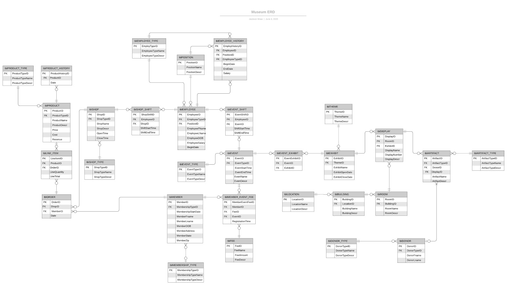

This is my the Entity Relationship Diagram for a database that a group of advanced Informatics students and I were tasked with designing, implementing, and presenting as part of a mock industry project, with our professor playing the role of our "client". During this project, I assumed the role of design team lead, requiring me to coordinate work with group members (which required the use of project charters and a Gantt chart), meet with the professor on a weekly basis to receive input from our "client", and assume responsibility for the quality of the design, on top of the programming work I needed to complete as a team member. Once this design was finalized, the four of us each took a section of the design and programmed the database from the ground up in SQL, using Microsoft SQL Server as our platform. Finally, once the tables, business rules, constraints, aggregation fields, and relationships were completed, we populated the database with a realistic amount of mock data, and in the end, fulfilled our goals and the requirements of the contract from the "client".
Database Management
All my work in the wonderful world of data
